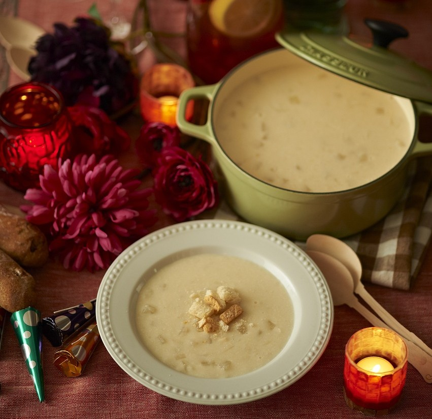

Pottage of Almond Milk

A delicate and creamy dish enjoyed by the upper classes, this almond milk-based soup was a medieval favorite.
Thickened with bread and lightly spiced with cinnamon and saffron, it offers a smooth, comforting texture with a touch of sweetness.
Almond milk was often used in place of dairy during fasting periods, making this dish both luxurious and versatile.
Ingredients
- 1 cup of almonds (blanched)
- 4 cups of water
- 1/2 cup of white bread (crumbled)
- 1 tsp sugar
- 1/4 tsp cinnamon
- Pinch of saffron (optional)
Steps
- Grind the almonds with water to make almond milk. Strain out the almond pulp.
- Add crumbled bread to the almond milk and stir until thickened.
- Add sugar, cinnamon, and saffron for flavor.
- Heat the mixture gently until warmed through. Serve hot.